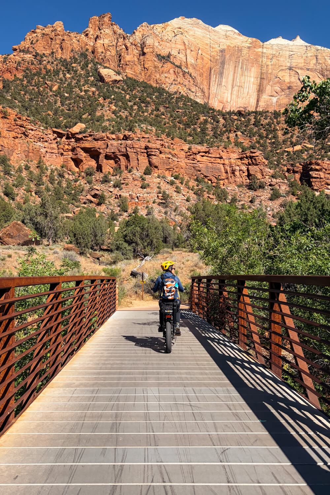

Two Wheels, Endless Trails: Biking in Southern Utah
Explore Washington County, one trail at a time.
If you love exploring the outdoors on two wheels, Washington County, Utah, might just be your idea of paradise. With an extensive network of paved pathways, scenic cycling routes, and world-class mountain biking trails, there's something for everyone.
One of the most remarkable things about biking in Southern Utah is the scenery. Imagine pedaling alongside towering red sandstone cliffs, winding through desert landscapes, or enjoying a peaceful ride with views of the Pine Valley Mountains.
And the variety is incredible!
The St. George area offers popular riding destinations such as the Bearclaw Poppy Trail, the Green Valley trail network, and Gooseberry Mesa. For a more relaxed ride, Washington County's paved multi-use trails connect parks, neighborhoods, and scenic corridors.
Head northeast toward Springdale and Zion National Park, and the landscape becomes even more dramatic. The paved Pa'rus Trail inside Zion welcomes bicycles and offers spectacular views of the canyon.
Whether you're a lifelong cyclist, a weekend explorer, or someone who simply enjoys getting outside, Southern Utah makes it easy to turn an ordinary afternoon into an adventure.
It's more than a place to ride. It's a lifestyle worth exploring.